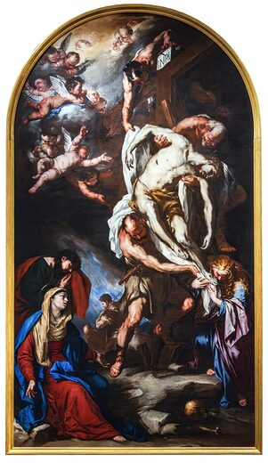
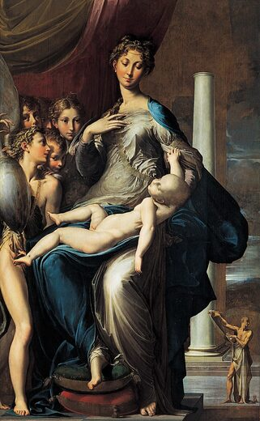
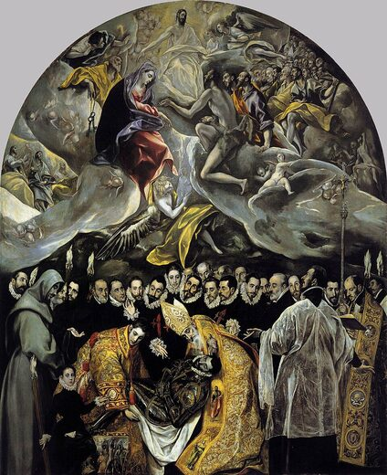

Deposição da Cruz
Pontormo dissolve a estabilidade renascentista em corpos alongados, cores ácidas e composição flutuante.
Sala III
Maneirismo e a Crise da Forma
Corpos alongados, cores intensas e o espírito em vertigem.

Pontormo dissolve a estabilidade renascentista em corpos alongados, cores ácidas e composição flutuante.

A figura elongada e o espaço ambíguo subvertem proporções clássicas, beleza que tensiona o cânone.

El Greco une céu espiritual e terra cerimonial, ponte entre a crise da forma e o teatralismo barroco.
Próxima sala